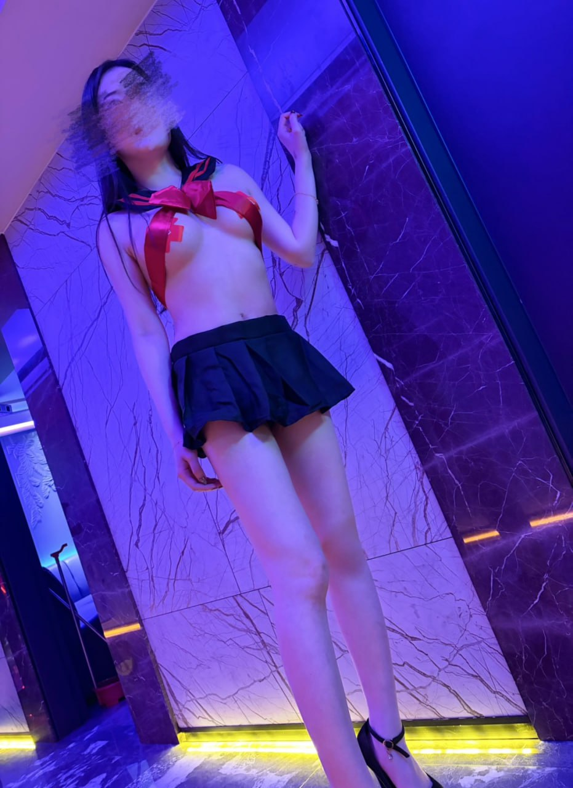
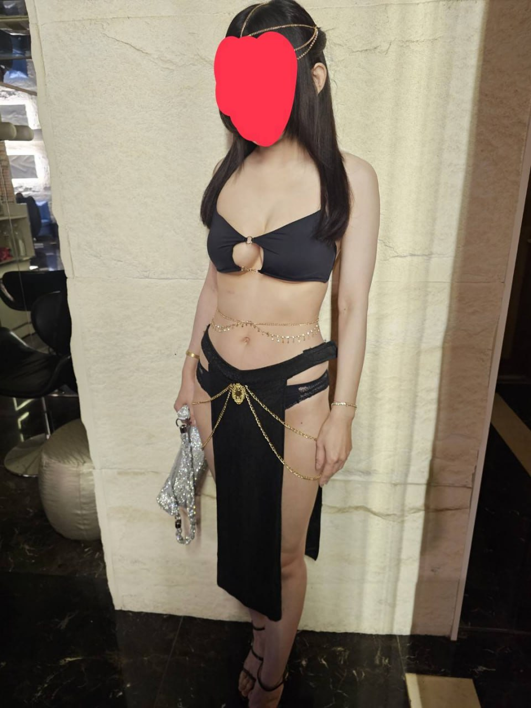

男模會館可預約確認
YES男模會館
YES男模會館屬多元客群友善的男模會館，適合閨蜜局、女生聚會與輕鬆聊天唱歌。預約前可先說明喜歡的互動風格。
- 區域
- 台北中山區／錦州街
- 時間
- 23:00–隔天中午，請預約確認
台北男模會館YES男模會館台北男模店
查看店家介紹與試算 →
M男模會館適合女生聚會、生日、慶祝與想要輕鬆派對氣氛的客人。安排時建議先確認基本時間、看台方式與酒水方案。
M男模會館的定位可從「女性友善、生日派對、閨蜜聚會與主題互動。」來理解。若你正在比較台北制服店、台北禮服店、便服店或男模會館，建議先看同行客人的年齡層、場合與預算，再決定是否指定這間店。
安排這類店家時，最重要的是先把基本費用拆開看：包廂費、人頭費、服務費、檯費、酒水與加時。只要事前確認清楚，實際到場比較不會因為臨時加點或延長時間而超出預算。
如果是第一次預約M男模會館，建議先告知台北夜總會俞右：人數、抵達時間、預計停留多久、預算上限、喜歡熱鬧或安靜，以及是否需要慶生、商務接待或女生聚會的氛圍。
| 分類 | 男模會館 |
|---|---|
| 區域 | 台北中山區／民生東路 |
| 地址／商圈 | 台北市中山區民生東路一段77號 |
| 營業時間 | 20:00–12:00 或晚間至隔日中午，請預約確認 |
| 包廂費估算 | NT$ 2,000 起 |
| 人頭費估算 | NT$ 500／人 |
| 服務費估算 | NT$ 1,000／包 |
| 檯費估算 | NT$ 2,100／60 分鐘 |
| 基本時間 | 120 分鐘起 |
依公開網路名單與消費資訊整理，實際營業狀態、價格與包廂安排以預約確認為準。
男模會館主要面向女性或女性友善聚會，常見內容包含 KTV、聊天、唱歌、遊戲、慶生、派對氣氛帶動與主題包廂。互動方式以合法社交娛樂、聊天陪伴與派對氛圍為主。
適合女生聚會、閨蜜慶生、下班放鬆、多人派對與想要輕鬆聊天唱歌的客人。第一次去建議先由幹部說明看台、計時、包廂與酒水規則。
建議先確認基本時間、男模檯費、人頭費、包廂費、少爺費、桌面費、酒水方案、看台方式與是否有低消。假日與生日旺季建議提早預約。
M男模會館的消費通常會受到人數、停留時間、包廂大小、公關／男模人數、酒水、加時與付款方式影響。頁面試算採公開常見費用模型估算，正式金額以預約確認與現場規定為準。
女性友善與派對感
適合閨蜜聚會與慶生
看台與互動安排較彈性
以唱歌、聊天、遊戲帶動氣氛
Media
此區使用你提供的照片與影片素材，建議放店內氛圍、包廂、酒水、燈光或形象照，讓使用者更容易停留。



Related
YES男模會館屬多元客群友善的男模會館，適合閨蜜局、女生聚會與輕鬆聊天唱歌。預約前可先說明喜歡的互動風格。
502男模會館是台北常見男模店名單之一，適合慶生、派對與多人聚會。建議先確認人數、時段、男模人數與包廂需求。
Reservation
提供台北制服店、林森北酒店、台北禮服店、便服店與男模會館預約諮詢。請先提供日期、時間、人數、預算與偏好店型。